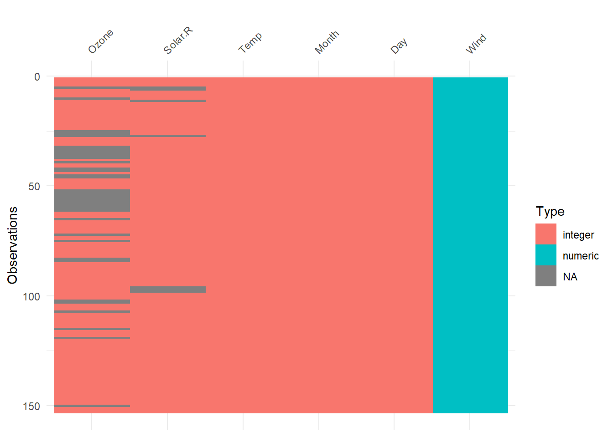
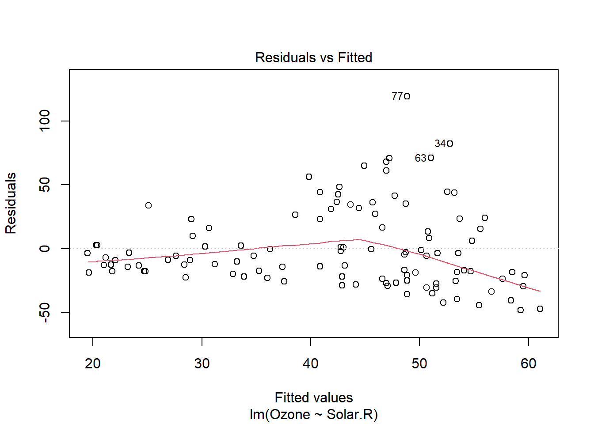
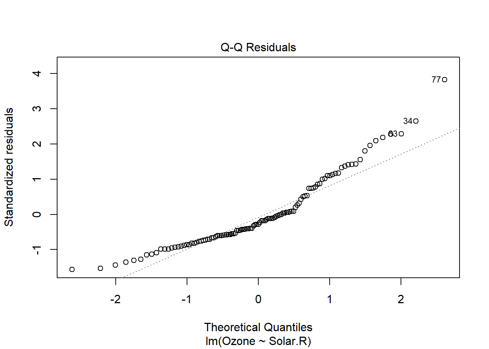
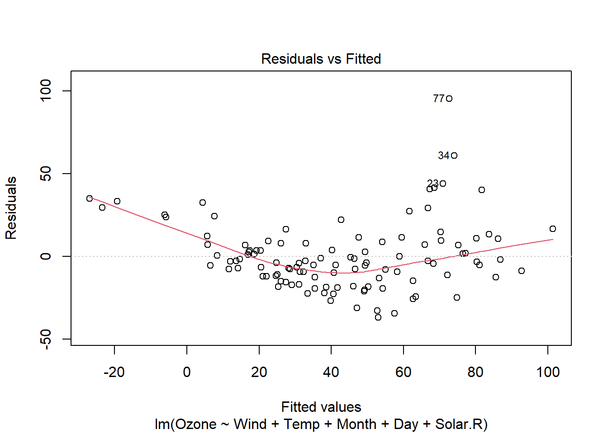

It says this air quality data is from 1973 and there are 6 columns: [,1] Ozone numeric Ozone (ppb) [,2] Solar.R numeric Solar R (lang) [,3] Wind numeric Wind (mph) [,4] Temp numeric Temperature (degrees F) [,5] Month numeric Month (1–12) [,6] Day numeric Day of month (1–31)
Q2. Use vis_dat to check out the data. Does it need cleaning?
vis_dat(airquality)

Yes, it looks like a lot of NAs exist in the ozone and solar R categories.
Q3. Fit a linear model to the cleaned data to predict Ozone from one of the possible predictors of your choosing. Why did you chose that variable?
I’m predicting ozone based on solar radiation because heat in the atmosphere increases the reactivity of molecules in the exhaust to become ozone.
#Making sure values are distinctlibrary(dplyr) aq_clean <- airquality %>%distinct() %>%drop_na() #dropping NA values- not sure if I want to do this because it removes the entire row when there are observations in other columns#imputation = calculations on the data to look for errors; this is another method of data cleaning#making a linear model
model <-lm(Ozone ~ Solar.R, data = aq_clean)
model <-lm(Ozone ~ Solar.R, data = aq_clean)
plot(model, which =1)

plot(model, which =2)

#trying a multiple regression modelmult_model <-lm(Ozone ~ Wind + Temp + Month + Day + Solar.R, data = aq_clean)plot(mult_model, which =1)

#I've realized there are fewer degrees of freedom and lower standard error with more variables
summary(mult_model)
Call:
lm(formula = Ozone ~ Wind + Temp + Month + Day + Solar.R, data = aq_clean)
Residuals:
Min 1Q Median 3Q Max
-37.014 -12.284 -3.302 8.454 95.348
Coefficients:
Estimate Std. Error t value Pr(>|t|)
(Intercept) -64.11632 23.48249 -2.730 0.00742 **
Wind -3.31844 0.64451 -5.149 1.23e-06 ***
Temp 1.89579 0.27389 6.922 3.66e-10 ***
Month -3.03996 1.51346 -2.009 0.04714 *
Day 0.27388 0.22967 1.192 0.23576
Solar.R 0.05027 0.02342 2.147 0.03411 *
---
Signif. codes: 0 '***' 0.001 '**' 0.01 '*' 0.05 '.' 0.1 ' ' 1
Residual standard error: 20.86 on 105 degrees of freedom
Multiple R-squared: 0.6249, Adjusted R-squared: 0.6071
F-statistic: 34.99 on 5 and 105 DF, p-value: < 2.2e-16
Q4. Using summary(), Does this seem like a valid model?
The output for summary() says that residual standard error is 31.22 on 109 degrees of freedom. I’m not sure if this is makes it a valid model or not. However, there is a whole host of other factors I can look at to evaluate the effectiveness of this model. The adjusted R squared is .1133, which shows a weak positive correlation, and the Shapiro-wilkes test has a very low p-value of .25^-6. Typically, a p-value of .05 or less is accepted as significant in science. Looking at the p-value from the ozone coeffcient (p = .000179), this is an efficient model.
shapiro.test(model$residuals)
Shapiro-Wilk normality test
data: model$residuals
W = 0.91418, p-value = 2.516e-06
# data: model$residuals#W = 0.91418, #p-value = 2.516e-06#graph comes out as residuals vs fitted. What does this mean? Residuals = having to do with R^2, fitted#fitted = prediction ofthe mean response value when you put predisctors, factor levels, or componenets into the model
summary(model)
Call:
lm(formula = Ozone ~ Solar.R, data = aq_clean)
Residuals:
Min 1Q Median 3Q Max
-48.292 -21.361 -8.864 16.373 119.136
Coefficients:
Estimate Std. Error t value Pr(>|t|)
(Intercept) 18.59873 6.74790 2.756 0.006856 **
Solar.R 0.12717 0.03278 3.880 0.000179 ***
---
Signif. codes: 0 '***' 0.001 '**' 0.01 '*' 0.05 '.' 0.1 ' ' 1
Residual standard error: 31.33 on 109 degrees of freedom
Multiple R-squared: 0.1213, Adjusted R-squared: 0.1133
F-statistic: 15.05 on 1 and 109 DF, p-value: 0.0001793
#output says residual standard error is 31.22 on 109 degrees of freedom
Q5. Explain the R2 found in a sentence.
The adjusted R2 value, or the coefficient of determination, is the closeness to the line of best fit of the response variable ozone based on the predictor variable, which in this case is solar radiation. At .1133, 11.33% of variance in ozone is predictable from solar radiation. Compare this to a multiple regression’s r-squared at .6071, which means that 60.7% of ozone variance can be predicted by the sum of all the variables. Adding more variables in this case made the model have greater success at predicting variance. Looking at the graph, there are outliers that prevent residuals vs fitted values from having a linear shape.
Q6. Use broom::augment to predict the Ozone of the cleaned data
#get a lot of features from summary but more concisetidy(model, conf.int =TRUE)
#for adding model diagnostics to the original data or predicting. This gives each observation a predicted (.fitted) value, the difference between observed and predicted (.resid), Cook's distance (each observation's influence on the model performance),.hat(shows if an observation has unusually high influence on a model's performance), and .std.resid (looks for unusual or outlier observations)a <-augment(model, new_data = aq_clean)
Q7. Use ggplot to plot the actual vs predicted Ozone
a %>%ggplot(aes(x = .fitted, y = Ozone)) +geom_point() +theme_bw()
Ozone Solar.R .fitted .resid
Min. : 1.0 Min. : 7.0 Min. :19.49 Min. :-48.292
1st Qu.: 18.0 1st Qu.:113.5 1st Qu.:33.03 1st Qu.:-21.361
Median : 31.0 Median :207.0 Median :44.92 Median : -8.864
Mean : 42.1 Mean :184.8 Mean :42.10 Mean : 0.000
3rd Qu.: 62.0 3rd Qu.:255.5 3rd Qu.:51.09 3rd Qu.: 16.373
Max. :168.0 Max. :334.0 Max. :61.07 Max. :119.136
.hat .sigma .cooksd .std.resid
Min. :0.009013 Min. :29.29 Min. :4.400e-07 Min. :-1.564012
1st Qu.:0.010605 1st Qu.:31.32 1st Qu.:1.068e-03 1st Qu.:-0.685801
Median :0.014555 Median :31.41 Median :3.639e-03 Median :-0.286459
Mean :0.018018 Mean :31.33 Mean :7.520e-03 Mean :-0.001339
3rd Qu.:0.021607 3rd Qu.:31.46 3rd Qu.:7.475e-03 3rd Qu.: 0.526236
Max. :0.043599 Max. :31.48 Max. :8.965e-02 Max. : 3.825285
Q8.
8a) Add a red line to show where the actual and predicted values are equal This can be done by plotting a 1:1 line (e.g. intercept 0, slope 1) with geom_abline(intercept = 0, slope = 1, color = “red”)
a %>%ggplot(aes(x = .fitted, y = Ozone)) +geom_point() +geom_abline(intercept =0, slope =1, color ="red")
8b. Add a subtitle to the plot showing the correlation between the actual and predicted values are equal This can be done by plotting a 1:1 line (e.g. intercept 0, slope 1) with
a %>%ggplot(aes(x = .fitted, y = Ozone)) +labs(title ="Actual vs Predicted Ozone Values Based on Solar Radiation",subtitle ="Correlation: 0.35") +geom_point() +geom_abline(intercept =0, slope =1, color ="red")